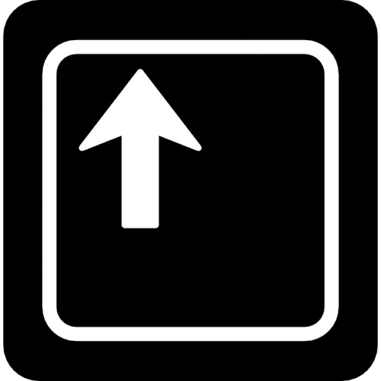

Règles du jeux
Le concept original de Pong est une simulation simpliste de tennis de table ou ping-pong, repris pour le nom du jeu. Une balle, représentée par un petit carré blanc, se déplace à travers l'écran et rebondit sur les rebords du haut et du bas. Les deux joueurs commandent chacun une raquette, représentée par un trait vertical aux extrémités gauche et droite du terrain de jeu. Dans la version originale, l'interface est dotée d'une ligne centrale en pointillés, séparant l'écran en deux et représentant le filet vu du dessus. Les bords de l'écran matérialisent les limites du terrain, la balle ne pouvant pas sortir par le haut ou le bas. Ces délimitations sont présentes dans la plupart des versions ultérieures mais avec des styles différents, selon les choix des développeurs. Enfin, les scores de chaque joueur sont affichés en haut de leur zone respective.
Si la balle frappe la raquette, elle rebondit vers l'autre joueur. Si elle manque la raquette, l'autre joueur marque un point. La vitesse de la balle augmente au cours de la partie, jusqu'à ce que l'un des joueurs perde le point2. L'angle de rebond de la balle change en fonction de l'impact avec la raquette. Le joueur déplace cette raquette en la faisant glisser verticalement entre les extrémités de l'écran à l'aide des contrôles:
Touche Player 1

Difficulté
Touche Player 2
